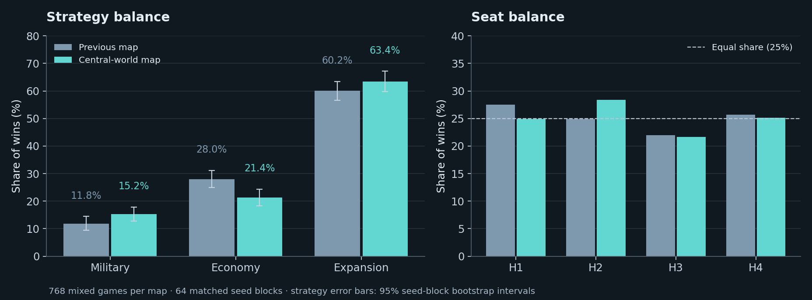

768 matched mixed-strategy games per map, across 64 seeds and every seat rotation. Target: 10 Prestige. The intervention has two neutral corner worlds, six symmetric ring worlds, one new center world, and four fixed moons. Existing neutral world identities and resource tiles vary by seed. Twelve relic sites remain; the center has none.
All 2,592 new simulations completed. The previous map supplies 864 saved controls, with twelve full reruns reproducing their prior outcomes. No published game or browser source was changed.

| Profile | Previous map | Central-world map | Paired change | 95% interval |
|---|---|---|---|---|
| Military | 11.8% | 15.2% | +3.4 pp | +0.1 to +6.5 pp |
| Economy | 28.0% | 21.4% | -6.6 pp | -10.9 to -2.0 pp |
| Expansion | 60.2% | 63.4% | +3.3 pp | -1.7 to +8.1 pp |
Median finish: 22.0 → 23.0 rounds. Paired mean change: +1.2 rounds (95% interval +1.0 to +1.5).
| Home / seat | Previous win share | Central-world win share |
|---|---|---|
| 1 | 27.5% | 24.9% |
| 2 | 24.9% | 28.4% |
| 3 | 22.0% | 21.6% |
| 4 | 25.7% | 25.1% |
Values are averages per player per game, previous → central-world map. Shortages count resource-deficient funding checks after conversions; they are not the number of missed turns. Longer games naturally produce and spend more.
| Resource | Generated | Unspent at finish | Overflow discarded | Funding shortages |
|---|---|---|---|---|
| Matter | 63.2 → 67.3 | 2.9 → 2.9 | 1.7 → 1.7 | 0.9 → 0.9 |
| Energy | 64.0 → 68.9 | 5.4 → 6.4 | 1.8 → 2.0 | 0.3 → 0.3 |
| Biomass | 34.9 → 38.1 | 10.1 → 12.1 | 3.6 → 4.1 | 0.6 → 0.5 |
| Data | 85.5 → 89.7 | 15.6 → 16.8 | 12.9 → 14.1 | 3.8 → 3.7 |
Add two units of one resource to a focal player at round 1 or 10. Each condition uses 192 pairs over 16 seed blocks and all homes. Effects are changes in that player’s win chance under these bot policies. Intervals crossing zero provide no clear evidence of a benefit or penalty.
| Gift round | Resource | Win-chance effect | 95% interval |
|---|---|---|---|
| 1 | Matter | +2.1 pp | -6.8 to +10.9 pp |
| 1 | Energy | +3.1 pp | -4.7 to +11.5 pp |
| 1 | Biomass | +3.1 pp | -4.2 to +10.9 pp |
| 1 | Data | +4.7 pp | -2.6 to +13.5 pp |
| 10 | Matter | +1.6 pp | -3.1 to +6.2 pp |
| 10 | Energy | -1.6 pp | -9.4 to +5.2 pp |
| 10 | Biomass | -2.6 pp | -9.4 to +3.1 pp |
| 10 | Data | +0.5 pp | -5.2 to +5.7 pp |
| Region | Colonized slots at finish | Games with a colony there |
|---|---|---|
| Center | 44.5% | 44.5% |
| Corners | 6.9% | 13.5% |
| Ring | 55.6% | 98.3% |
The nearest neutral world is 5.34 → 6.00 center steps away on average. The second nearest is 7.18 → 6.00. Both nearby worlds are exactly six steps from every home in the proposed geometry.
The setup intervention occurs before production, after ordinary game setup. It consumes only an independent map RNG. Each pair retains identical player decks, market and relic deck order, gameplay RNG position, home worlds, and resource tiles on the eight original neutral worlds. Gameplay draws can diverge after different decisions. The center adds seven resource hexes but no relic. Costs, scoring, combat, and the corrected 17.22 browser policies are unchanged.
The full geometry gives each home the same sorted distances to neutral world centers and moons. Resource assignments still vary across seeds. The study validates 1,000 setups and all paired initial-state fingerprints; 24 full games verify that ledger instrumentation does not alter play. Resource ledgers close exactly. All uncertainty intervals resample entire seed blocks, preserving within-seed dependence.
These profiles are heuristic bots, not optimal humans. This is evidence about this rules-and-policy combination; it does not prove global strategy or resource balance.
Full results · Resource CSV · Intervention specification · Verification record